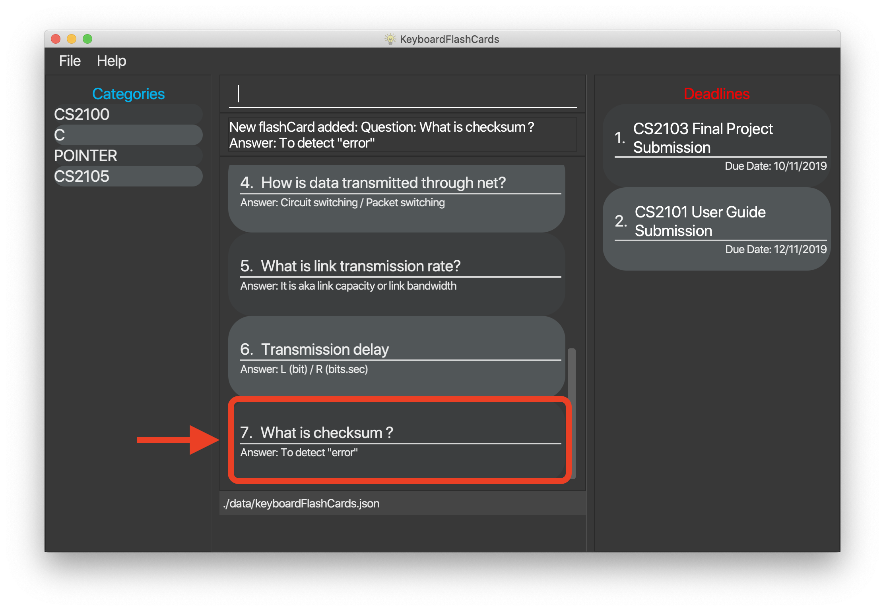
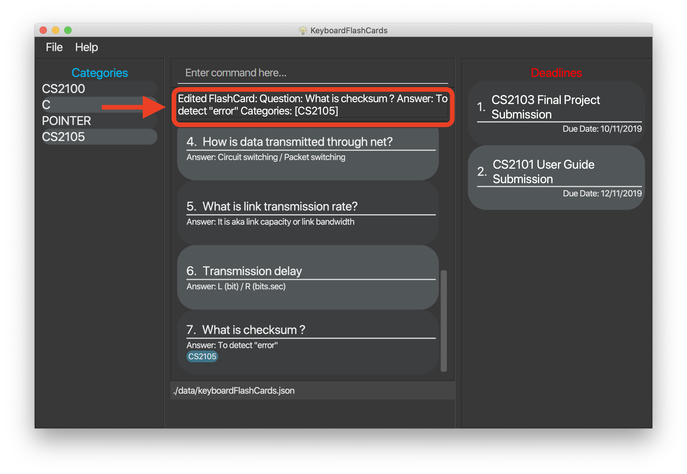
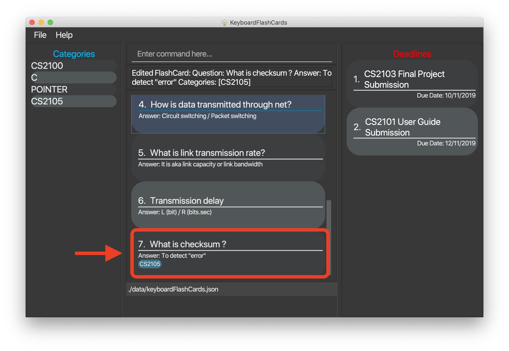
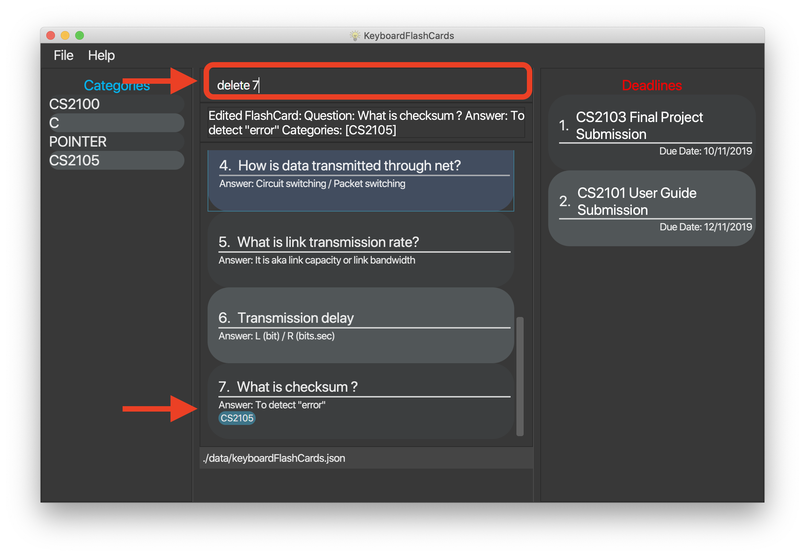
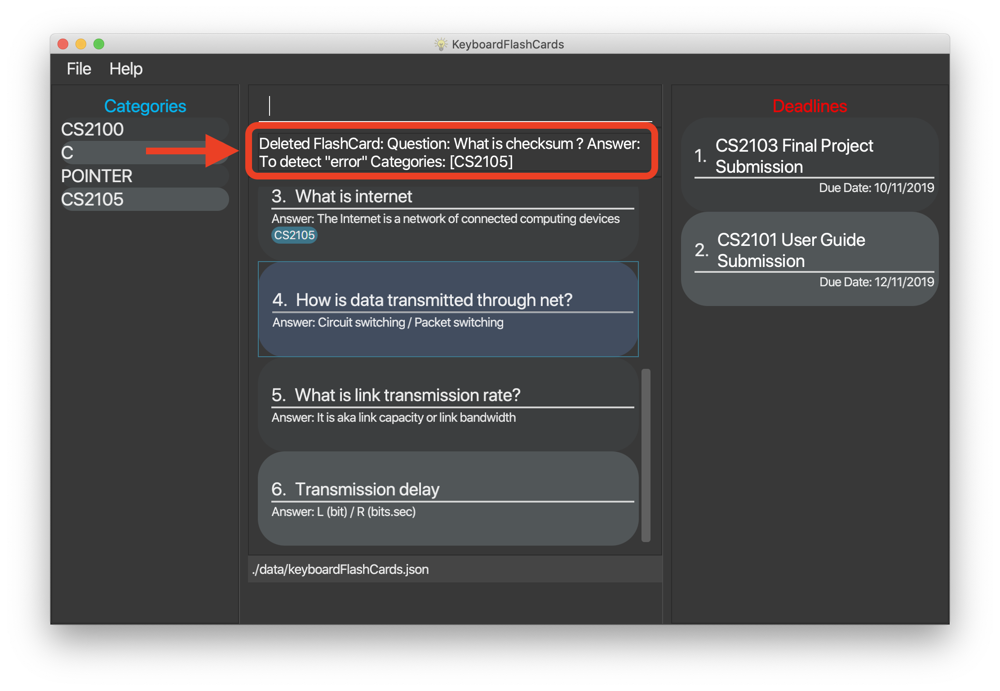
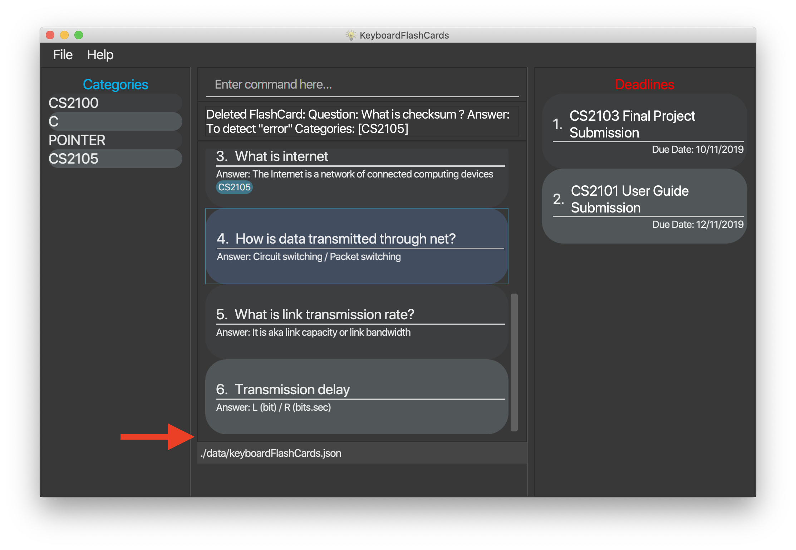
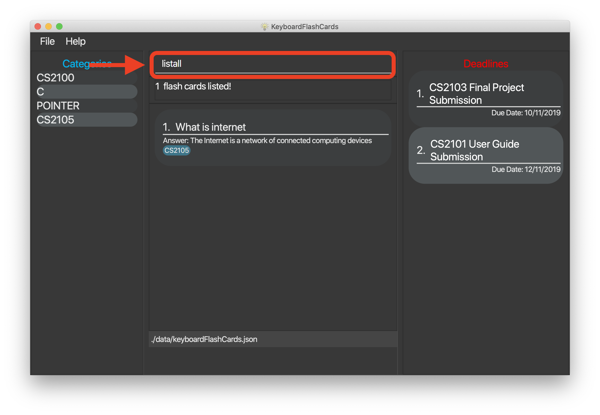
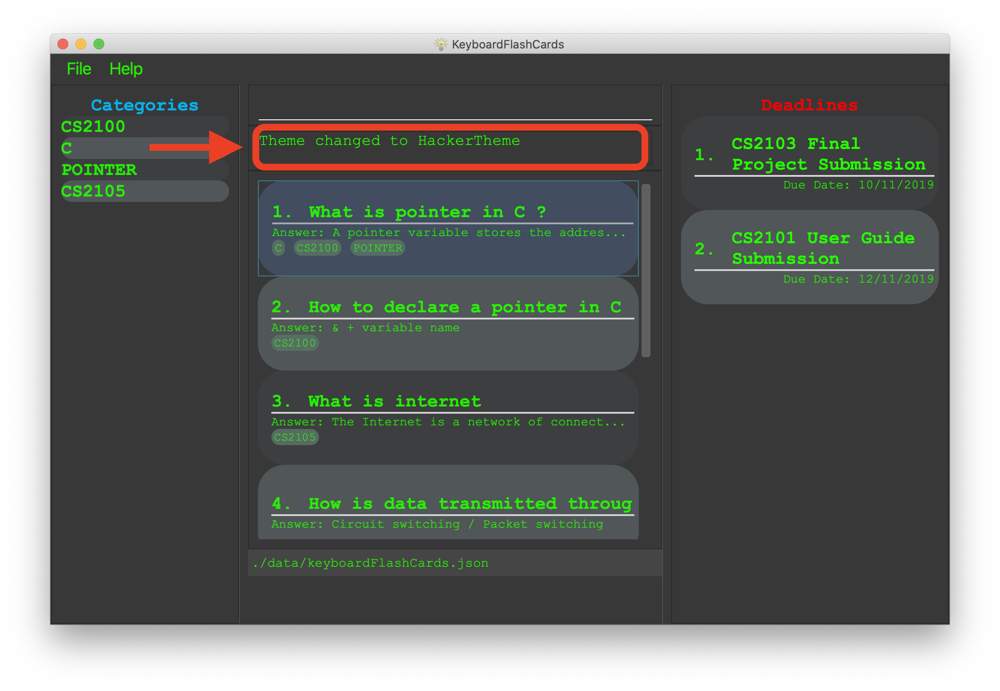

By: CS2103T-T12-4 Since: Aug 2019 Licence: -
- 1. Introduction
- 2. Quick Start
- 3. Features
- 3.1. Add new flashcard:
add [q>QUESTION] [q>ANSWER] [c>CATEGORY]… - 3.2. Edit an existing flashcard:
edit [INDEX] {fields wanted to edit}… - 3.3. Delete flashcard:
delete [INDEX] - 3.4. Clear all the flashcard:
clear - 3.5. List of category :
list [category] - 3.6. List all flashcards:
listall - 3.7. Search for flashcards:
search - 3.8. Start flashcard test:
start - 3.9. Stop flashcard test:
end - 3.10. Set a reminder for a specific category of flashcards. [coming in v1.3]
- 3.11. Add general deadlines reminders:
deadline t>[TASK] d>[DUE DATE] - 3.12. Remove deadline from list:
remove [index] - 3.13. Show monthly calendar with all deadlines:
calendar - 3.14. Export flashcards to a document file:
export c>CATEGORY p>FILE_PATH - 3.15. Get the full list of commands:
help - 3.16. Exit:
exit - 3.17. View overall statistics:
stats - 3.18. Change color themes:
theme [THEMENAME] - 3.19. Saving the data
- 3.1. Add new flashcard:
- 4. FAQ
- 5. Command Summary
1. Introduction
KeyboardFlashCards (KFC) is for those who prefer to use a desktop app to study using flashcards. More importantly, it is optimized for those who prefer to work with a Command Line Interface (CLI) while still having the benefits of a Graphical User Interface (GUI). If you can type fast, KFC can help you manage your flashcards much more efficiently than traditional GUI apps.
Interested? You should be! KFC is perfect for NUS Computing students. We even have additional features not available with most flashcard managers that we’re sure you’ll love. Jump to the Section 2, “Quick Start” to get started. Enjoy!
2. Quick Start
-
Ensure you have Java 11 or above installed in your Computer.
-
Download the latest build keyboardflashcards.jar here.
-
Copy the file to the folder you want to use as the home folder for your KFC app.
-
Double-click the file to start the app. The GUI should appear in a few seconds.

3. Features
This section contains the features and their respective commands
Command Format
-
Words in
UPPER_CASEare the parameters to be supplied by the user e.g. inadd >QUESTION,QUESTIONis a parameter. The command format would thus be as such:add q>1+1. -
Items in square brackets skinparam linetype orthoare optional e.g
q>QUESTION [c>CATEGORY]can be used asq>1+1 c>mathor asq>1+1. -
Items with
… after them can be inserted zero or more times e.g.[c>CATEGORY]…can be used asc>math,c>math c>schooletc. -
Parameters can be in any order e.g. if the command specifies
q>QUESTION a>ANSWER,a>ANSWER q>QUESTIONis also acceptable.
3.1. Add new flashcard: add [q>QUESTION] [q>ANSWER] [c>CATEGORY]…
This command allows to you to add a new flashcard with question and answer.
add q>What is CS2103T a>Software engineering
You may also include the category for the flashcard.
add q>What is CS2103T a>Software engineering c>CS2103T
To add:
-
Type
add q>What is the use of checksum ? a>To detect "error"and press Enter.
-
The result box will display the message: "New flashCard added: What is the use of checksum ? Answer: To detect "error""

-
And you can check the new flashcard has been added to bottom of the flashcard list.

3.2. Edit an existing flashcard: edit [INDEX] {fields wanted to edit}…
This command allows you to edit the flashcard with index corresponding to the
display list with 1 or multiple fields
e.g:
-
edit 7 c>CS2105
To edit:
-
Type
edit 7c>CS2105and press Enter.
-
The result box will display the message: "Edited FlashCard: What is the use of checksum ? Answer: To detect "error" Categories: [CS2105]".
 -
And you can see that the 7th flashcard has been edited on the flashcard list.

3.3. Delete flashcard: delete [INDEX]
This command allows you the delete a
particular flashcard with the index
show on the flashcard list. e.g.
delete 7
To delete:
-
Type
delete 7and press Enter. -
The result box will show the message: "Deleted FlashCard: What is the use of checksum ? Answer: To detect "error" Categories: [CS2105]"
 -
And you can check the flashcard list that the flashcard has been deleted.

3.4. Clear all the flashcard: clear
This command allows you to delete all the flashcard in the storage.
To clear:
-
Type `clear' and press Enter.

-
The result box will show the message: -"Flash card has been cleared!"_ And you will see that all lists turn empty.

3.5. List of category : list [category]
This command allows you to list all flashcards under one or multiple categories. Multiple keywords are separated by a single space.
to list category:
-
Type
list CS2105and press Enter.
-
The result box will show message: "1 flashcard is listed!" .

-
And the flashcard list is updated.

3.6. List all flashcards: listall
This command allows you to lists all the flashcards in the storage.
To listall:
-
Type
listalland press Enter. -
The result box will show message: "Listed all Flash Cards".

-
And the flashcard list will show all the flashcards. You can move your mouse to the flashcard list and scroll up and down to view the flashcards.

3.7. Search for flashcards: search
The section will show you 3 methods to search for flashcards. Keywords are case-insensitive.
3.7.1. Either the question or the answer matches the keyword(s): "find [keyword(s)]
This command allows you to search for flashcards with the question or answer matching the keyword(s). Multiple keywords are separated by a single space.
To search:
-
Type
search pointerand press Enter.
-
The result box will show message: "2 flash cards listed!" and the flashcard list will show the matching flashcards

3.7.2. Question matching the keyword(s) only: searchqn [keyword(s)]
This command allows you to search for flashcards with the question matching the keyword(s). Multiple keywords are separated by a single space.
to search question:
-
Type
searchqn Cand press Enter.
-
The result box will show message: "2 flash cards listed!" and the flashcard list will show the matching flashcards

3.7.3. Answer matching the keyword(s) only: searchans [keyword(s)]
This command allows you to search for flashcards with the answer matching the keyword(s). Multiple keywords are separated by a single space.
to search for answer:
-
Type
searchans nameand press Enter.
-
The result box will show message: "1 flash cards listed!" and the flashcard list will show the matching flashcards
image::SearchaStep2.png[width="600"].
3.8. Start flashcard test: start
Starts the flashcard test (assuming you are in the category ‘folder’)
start
Starts the flashcard test from any specific category
start [category]
3.10. Set a reminder for a specific category of flashcards. [coming in v1.3]
remind Math 04/11 1030
3.11. Add general deadlines reminders: deadline t>[TASK] d>[DUE DATE]
This command adds a general deadline into a list of deadlines. The list will be display on the right-side pane. Note: [DUE DATE] has to be in dd/MM/yyyy format.
You can refer to the example below:
deadline t>CS2103 Exam d>10/11/2019
Key the above mentioned into the command box
After which, the result box will show the success message. The new deadline will now be shown at the right side-bar.
3.12. Remove deadline from list: remove [index]
Removes a specific deadline into the deadline list. The list on the right-side pane will no longer have the deadline.
remove 2
3.13. Show monthly calendar with all deadlines: calendar
Shows the calendar filled with all deadlines in the month. The calendar will be shown as a new window pop-up.
calendar
3.14. Export flashcards to a document file: export c>CATEGORY p>FILE_PATH
Exports all flashcards in the supplied category to an external document (.docx) file.
Each flashcard will be represented as a question-and-answer pair.
The document file will be created at the supplied file path.
| Use this to export your flashcards into an easily-printable cheat sheet! Use them for your assessments or self-learning. |
The given file path is required to end with .docx - this is because we currently only support
exporting to document files.
|
export c>CS2105 p>C:\Users\User\Documents\cheat_sheet.docx
3.15. Get the full list of commands: help
This command allow to you to view all the commands available in the application.
help
-
Type
helpand press Enter to execute it.
-
The result box will display the message:
Opened help window.
-
A help window with all the commands will also be displayed:

3.16. Exit: exit
This command allows you to exit the application.
To exit:
-
Type
exitand press Enter. -
The application window will close by itself.
3.17. View overall statistics: stats
This command allow to you to view the number of good, hard and easy flashcards completed during test mode and in the application.
stats
To view statistics:
-
Type
statsand press Enter.
-
The result box will display the message:
Displays the number of GOOD, HARD & EASY FlashCards
-
A bar chart will also be displayed:

3.18. Change color themes: theme [THEMENAME]
This command allows you to change the theme of the app.
Follow are the current available themes
-
dark
-
light
-
pink
-
blue
-
hacker
-
nus
To change theme:
-
Type "theme hacker" and press Enter

-
The result box will show the message: "Theme changed to hackerTheme" and the theme will be changed.

3.19. Saving the data
Flashcard data are saved in the hard disk automatically after any command that changes the data.
There is no need to save manually.
4. FAQ
Q: How will the program know the correct answer to the questions?
A: You have to key in the answer manually when you create the question - it’s similar to a real set of flashcards.
Q: How does the reminder system work?
A: You select a category and a date, and the program will remind you to revise that category when the date comes.
Q: How will the program know if my answer is good or bad?
A: It doesn’t know - you have to decide for yourself whether you are satisfied with your answer.
Q: Will I be able to resume the test from where I left off after I have stopped?
A: No. The program does not support that.
Q: Can I undo the commands that I have entered?
A: No. However, a confirmation will be displayed before any potentially-hard-to-reverse actions are done.
Q: Can I change the category of a flashcard?
A: Yes, it will be one of the fields you can change when you edit the flashcard. Do note that after you change the category, you will have to refer to it using its new category and ID.
Q: Can I use my mouse to interact with the user interface?
A: Yes, but only to a very small extent, like closing the window. This application is targeted primarily at keyboard users.
Q: What if I forget the format of a command’s arguments?
A: Don’t worry! You will be shown the expected format once you have keyed in the whole command.
Q: Is there an autocomplete functionality?
A: Yes, you can press Tab to use this feature.
5. Command Summary
-
Add new flashcard -
add [q>QUESTION] [a>ANSWER] [c>CATEGORY]…
e.g.add q>1+1 a>2 -
Set a flashcard as bad -
bad [INDEX]
e.g.bad 2 -
Show Calendar of Deadlines -
calendar -
Clear all the flashcard -
clear
e.g.clear -
Edit an existing flashcard -
edit [INDEX] {fields wanted to edit}…
e.g.edit 2 c>CS2103 -
Add a new Deadline -
deadline t>[TASK] d>[DUE DATE]
e.g.deadline t>Math Test d>01/10/2019 -
Delete an existing flashcard -
delete [INDEX]
e.g.delete 10 -
Export all flashcards under a specific category, to a specific filepath -
export c>CATEGORY p>FILE_PATH
e.g.export c>CS2105 p>C:\Users\User\Documents\cheat_sheet.docx -
Get full list of commands -
help
e.g.help -
List all flashcards under a specific category -
list [category]
e.g.list Math -
List all flashcards - 'listall'
-
Set user preference for reminders -
remind [category] DD/MM HHmm
e.g.remind Math 04/10 1230 -
Remove Deadline from list -
remove [INDEX]
e.g.remove 2 -
Search of flashcards -
search-
search [keyword(s)] e.g
search c -
searchqn [keyword(s)] e.g
searchqn pointer -
searchans [keyword(s)] e.g
searchans name
-
-
Start a certain topic of flashcards -
start [keyword]
e.g.start Mathematics -
View overall statistics -
stats -
Stop flashcard test -
end